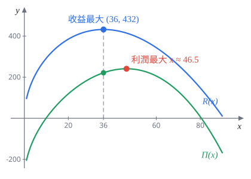
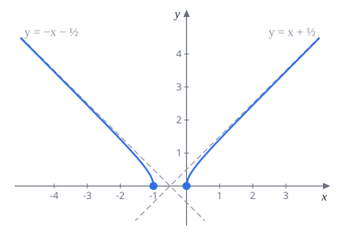

110 學年第 1 學期 微積分 1 期中考
模組 13–16 班，官方解答改寫成詳解
官方解答錯誤都在第 5 題：
- 5(c)：利潤函數裡的成本寫成 $0.0001x^3$，題目給的是 $C(x)=0.001x^3-0.105x^2+300$，應為 $0.001x^3$。
- 5(d)：寫成 $\Pi'(36)=R'(36)+C'(36)=0+C'(36)\lt0$。利潤是收益減成本，應為 $\Pi'(36)=R'(36)-C'(36)=-C'(36)\approx3.67\gt0$。評分標準裡的「$\Pi'(36)=C'(36)\neq0$」也應為 $-C'(36)$。結論「不同意學生 A」不受影響，因為重點只是 $\Pi'(36)\neq0$。
每題下方灰字是對應的主題複習路線段號和講義小節。標超出範圍的是講義沒教的工具，看懂就好。官方解答有用羅必達的地方，能換成講義範圍內做法的都換掉了（講義規定考試不能用羅必達）。
第 1 題 求極限（22%）
1(a)$\displaystyle\lim_{x\to\infty}\frac{-x^{3/2}+2x}{3x^{3/2}+3x-5}$（5%）
主題 5 無窮極限與漸近線｜§2.5
考點：$x\to\infty$ 的有理式，分子分母同除最高次項 $x^{3/2}$。次方不是整數也一樣做。
$$\frac{-x^{3/2}+2x}{3x^{3/2}+3x-5}=\frac{-1+2x^{-1/2}}{3+3x^{-1/2}-5x^{-3/2}}\;\longrightarrow\;\frac{-1+0}{3+0-0}$$$-\dfrac13$
速判：分子分母最高次相同，極限就是最高次係數比 $\frac{-1}{3}$。
1(b)$\displaystyle\lim_{x\to0^+}\left(\frac{\tan2x}{x}+\frac1{\ln x}\right)$（6%）
主題 4 算極限的技巧｜§2.3（同講義週二題 14） 主題 5｜§2.2
考點：兩項分開算。第一項是 $\frac{\sin x}{x}$ 的變形；第二項要知道 $\ln x\to-\infty$。
$x\to0^+$ 時 $\ln x\to-\infty$，所以 $\dfrac1{\ln x}\to0$。
第一項拆成 $\sin$ 和 $\cos$：
$$\frac{\tan2x}{x}=\frac{\sin2x}{2x}\cdot2\cdot\frac1{\cos2x}\;\longrightarrow\;1\cdot2\cdot1=2$$兩項極限都存在，可以相加。
$2$
官方給分：$\frac1{\ln x}\to0$ 1 分；$\frac{\tan2x}{x}$ 拆成 $\frac{\sin2x}{2x}$ 的形式 2 分、算出 2 再 2 分。
1(c)$\displaystyle\lim_{x\to0}(1+3x)^{\frac{1}{\arcsin2x}}$（6%）
主題 11 $e$ 的極限｜§5.4（講義週五題 15 把 $\sin$ 換成 $\arcsin$）
考點：$1^\infty$ 型。取 $\ln$，再湊出 $\frac{\ln(1+u)}{u}\to1$ 和 $\frac{\arcsin u}{u}\to1$ 兩個標準極限。
取 $\ln$，並把 $3x$、$2x$ 湊進去：
$$\ln\left[(1+3x)^{\frac1{\arcsin2x}}\right]=\frac{\ln(1+3x)}{\arcsin2x}=\frac{\ln(1+3x)}{3x}\cdot\frac{2x}{\arcsin2x}\cdot\frac32$$第一個因子 $\to1$（週五題 13 的副產品）。第二個因子令 $u=\arcsin2x$，則 $2x=\sin u$，$x\to0$ 時 $u\to0$：
$$\frac{2x}{\arcsin2x}=\frac{\sin u}{u}\;\longrightarrow\;1$$所以 $\ln(\text{所求})\to\frac32$。
$e^{3/2}$
官方用羅必達算 $\frac{\ln(1+3x)}{\arcsin2x}$，考試不能用。上面的換元法把反三角換回三角，是處理 $\arcsin$、$\arctan$ 極限的標準手法。
1(d)$\displaystyle\lim_{x\to0}\left(\frac1{2x}-\frac1{1-e^{-2x}}\right)$（5%）
超出範圍需要羅必達法則（講義只在 §6.4 介紹，不考）
考點：$\infty-\infty$ 型，通分後是 $\frac00$。麻煩在於分子 $1-e^{-2x}-2x$ 的一次項剛好抵消，要知道 $e^{-2x}$ 的二次近似才算得出來，講義的工具不夠。官方用兩次羅必達：
$$\frac{1-e^{-2x}-2x}{2x(1-e^{-2x})}\overset{L}{=}\frac{2e^{-2x}-2}{2(1-e^{-2x})+4xe^{-2x}}=\frac{e^{-2x}-1}{1-e^{-2x}+2xe^{-2x}}\overset{L}{=}\frac{-2e^{-2x}}{4e^{-2x}-4xe^{-2x}}\to\frac{-2}{4}$$$-\dfrac12$
每用一次羅必達前都要確認還是 $\frac00$：第一次分子分母都 $\to0$；化簡後第二次也是。
第 2 題 連續與可微（10%）
$f(x)=\begin{cases}|x|\cos\left(\frac1x\right), & x\neq0\\ 0, & x=0\end{cases}$
2(a)$f$ 在 $x=0$ 是否連續？說明理由。（5%）
考點：連續要檢查 $\lim_{x\to0}f(x)=f(0)$。極限部分是「有界乘趨近 $0$」，用夾擠。
$-1\le\cos\frac1x\le1$，乘上 $|x|\ge0$：
$$-|x|\le|x|\cos\left(\frac1x\right)\le|x|$$兩邊 $\to0$，夾擠得 $\lim_{x\to0}f(x)=0=f(0)$。
連續
官方給分：不等式 2 分、夾擠得極限 2 分、和 $f(0)$ 比較 1 分。最後一步常被忘記：算出極限還不夠，要寫「等於 $f(0)$」才是連續。
2(b)$f$ 在 $x=0$ 是否可微？說明理由。（5%）
主題 7 導數的定義與可微性｜§4.2 不可微的函數（和講義週四題 5、題 6 對照）
考點：分段點的可微性只能用定義。差商是 $\frac{|h|}{h}\cos\frac1h$，$|h|$ 只抵消掉一個 $h$，剩下的 $\cos\frac1h$ 沒有極限。
看右導數：
$$\lim_{h\to0^+}\frac{f(h)-f(0)}{h}=\lim_{h\to0^+}\frac{h\cos\frac1h}{h}=\lim_{h\to0^+}\cos\left(\frac1h\right)$$這個極限不存在：取 $h=\frac1{2n\pi}$ 時 $\cos\frac1h=1$，取 $h=\frac1{(2n+1)\pi}$ 時 $=-1$，兩串都趨近 $0^+$，函數值卻停在 $1$ 和 $-1$。右導數不存在，$f'(0)$ 就不存在。
不可微
對照講義週四題 5 的 $x\sin\frac1x$ 也是連續但不可微；題 6 的 $x^2\sin\frac1x$ 則可微，因為差商 $h\sin\frac1h\to0$。判斷方法：振盪項前面的因子是一次方就不可微，二次方以上就可微。
第 3 題 求導函數（15%）
3(a)$f(x)=\arctan\left(\dfrac x2\right)+\ln\sqrt{\dfrac{x-2}{x+2}}$，$x\gt2$，求 $f'(x)$。（7%）
主題 10 反三角導數｜§5.2 主題 11 對數的導數｜§5.3
考點：$\arctan$ 加連鎖律；$\ln$ 裡面有根號和分式時，先用對數律拆開再微分，比硬套連鎖律快很多。
第一項：
$$\frac{d}{dx}\arctan\frac x2=\frac{1}{1+\frac{x^2}4}\cdot\frac12=\frac{2}{4+x^2}$$第二項先拆（$x\gt2$ 時 $x-2,x+2$ 都正）：$\ln\sqrt{\frac{x-2}{x+2}}=\frac12\ln(x-2)-\frac12\ln(x+2)$，
$$\frac12\left(\frac1{x-2}-\frac1{x+2}\right)=\frac12\cdot\frac{4}{x^2-4}=\frac{2}{x^2-4}$$相加通分：
$$\frac{2}{x^2+4}+\frac{2}{x^2-4}=\frac{2(x^2-4)+2(x^2+4)}{x^4-16}=\frac{4x^2}{x^4-16}$$$f'(x)=\dfrac{4x^2}{x^4-16}$
官方是直接對 $\ln\sqrt{\cdots}$ 用連鎖律，要再對根號和分式各微一次，步驟多、容易錯。
3(b)$f(x)=x^{\ln(x^3)}+2^x$，$x\gt0$，求 $f'(x)$。（8%）
主題 11 對數微分｜§5.4.1 主題 9｜§4.8 $a^x$ 的導數
考點：$x^{\ln(x^3)}$ 底和指數都有 $x$，用對數微分；$2^x$ 直接用公式 $(a^x)'=a^x\ln a$。兩項要分開處理，不能對整個和取 $\ln$。
令 $a=x^{\ln(x^3)}$。取 $\ln$，並用 $\ln(x^3)=3\ln x$：
$$\ln a=\ln(x^3)\cdot\ln x=3(\ln x)^2$$兩邊微分：$\dfrac{a'}{a}=6\ln x\cdot\dfrac1x$，所以 $a'=x^{\ln(x^3)}\cdot\dfrac{6\ln x}{x}$。
$f'(x)=\dfrac{6\ln x}{x}\,x^{\ln(x^3)}+2^x\ln2$
常見錯誤：對 $f=a+2^x$ 整個取 $\ln$，$\ln(a+2^x)$ 拆不開。
第 4 題 隱函數與線性近似（12%）
$\tan(x-y)=x^2+\sin(2y)$ 在 $(0,0)$ 附近定義隱函數 $y=y(x)$。
4(a)求 $(0,0)$ 處的 $\dfrac{dy}{dx}$。（7%）
主題 10 隱微分｜§5.1
考點：隱微分加連鎖律。$\tan(x-y)$ 的內層是 $x-y$，導數是 $1-y'$，最容易漏掉。
$$\sec^2(x-y)\cdot(1-y')=2x+2\cos(2y)\cdot y'$$代入 $(0,0)$：$\sec^20=1$，$\cos0=1$，
$$1-y'=2y'\;\Longrightarrow\;y'=\frac13$$$\dfrac{dy}{dx}\Big|_{(0,0)}=\dfrac13$
官方給分：$\tan$、$\sin$ 的導數各 1 分，連鎖律 2 分，代點 2 分，解出 1 分。
4(b)寫出 $y(x)$ 在 $x=0$ 的線性化，並估計 $y(0.01)$。（5%）
主題 12 線性近似｜§6.1
考點：$L(x)=y(0)+y'(0)(x-0)$，兩個值都已知。
$$L(x)=0+\frac13x=\frac x3,\qquad y(0.01)\approx L(0.01)=\frac{0.01}3$$$L(x)=\dfrac x3$；$y(0.01)\approx\dfrac{0.01}{3}\approx0.00333$
(a) 算錯的話，官方在這小題的兩部分各再扣 1 分，所以 (a) 一定要驗算。
第 5 題 演唱會的收益與利潤（18%）
需求 $x$ 張票時，票價 $p(x)=\dfrac{96}{\sqrt x}-\dfrac x9$，$1\le x\le90$。成本 $C(x)=0.001x^3-0.105x^2+300$。
5(a)求票房收益的最大值。（收益 $=$ 票價 $\times$ 需求量）（6%）
主題 14 極值｜§7.1 閉區間上的最大最小值（應用題情境講義沒有，數學工具在範圍內）
考點：寫出收益函數，在閉區間 $[1,90]$ 上求最大值：找臨界點，再說明它真的是最大。
收益（1 分）：
$$R(x)=x\cdot p(x)=96\sqrt x-\frac{x^2}{9}$$微分（2 分）並令為 $0$（1 分）：
$$R'(x)=\frac{48}{\sqrt x}-\frac{2x}{9}=0\iff2x^{3/2}=432\iff x^{3/2}=216\iff x=36$$說明是最大（2 分），三種寫法擇一：
- 二階導數：$R''(x)=-24x^{-3/2}-\frac29\lt0$，所以 $x=36$ 是極大；而且 $R$ 整段凹口向下，唯一的臨界點就是全域最大。
- 一階導數：$x\lt36$ 時 $R'\gt0$，$x\gt36$ 時 $R'\lt0$。
- 比端點：$R(1)\approx95.9$，$R(36)=576-144=432$，$R(90)=96\sqrt{90}-900\approx10.7$。
$x=36$ 時收益最大，最大收益 $R(36)=432$
5(b)討論何時出現規模經濟，也就是邊際成本 $C'(x)$ 遞減。（5%）
考點：「$C'$ 遞減」就是「$C'$ 的導數為負」，也就是 $C''\lt0$（成本曲線凹口向下）。
$$C'(x)=0.003x^2-0.21x,\qquad C''(x)=0.006x-0.21\lt0\iff x\lt35$$$1\le x\lt35$ 時有規模經濟
官方給分：寫出 $C''\lt0$ 1 分、算對 $C''$ 2 分、解不等式 2 分。寫 $\le$ 也算對，漏寫 $1\le x$ 不扣分。
5(c)寫出利潤函數 $\Pi(x)$。（利潤 $=$ 收益 $-$ 成本）（3%）
主題 1 函數｜§1.1
$\Pi(x)=96\sqrt x-\dfrac{x^2}9-0.001x^3+0.105x^2-300$，$1\le x\le90$
官方解答這裡的 $0.0001x^3$ 是筆誤（見頁首）。
5(d)學生 A 說：收益最大時，利潤也最大。你同意嗎？說明理由。（4%）
主題 14 極值｜§7.1（Fermat 定理：內部極值點的導數為 0）
考點：如果利潤在內部點 $x=36$ 有最大值，$\Pi'(36)$ 必須是 $0$（Fermat 定理）。所以只要算出 $\Pi'(36)\neq0$ 就能反駁。
$\Pi'=R'-C'$，而 $R'(36)=0$：
$$\Pi'(36)=0-C'(36)=-(0.003\cdot1296-0.21\cdot36)=-(3.888-7.56)=3.672\gt0$$$x=36$ 在區間內部，且 $\Pi'(36)\neq0$，所以 $\Pi$ 在 $36$ 沒有最大值。更具體地說，$\Pi'(36)\gt0$ 表示多賣幾張票利潤還會上升。
不同意

官方給分：方法正確 2 分、驗證 $\Pi'(36)\neq0$ 2 分。只寫「不同意」或「No」0 分；(a) 或 (c) 算錯最多拿 2 分。
另一種說法（經濟學版本）：利潤最大時邊際收益等於邊際成本，$R'(x_0)=C'(x_0)$。但 $R'(36)=0$、$C'(36)\approx-3.67$，兩者不相等。
第 6 題 函數作圖（23%）
$f(x)=(x^2+x)^{1/2}$
6(a)寫出定義域，求所有漸近線。（10%）
考點：根號裡要 $\ge0$，解二次不等式。漸近線的重點是斜漸近線，而且 $x\to\infty$ 和 $x\to-\infty$ 要分開算，因為 $\sqrt{x^2}=|x|$ 在兩邊的正負不同。
定義域（3 分）：$x^2+x=x(x+1)\ge0$，根 $x=0,-1$，兩根之外為正：
定義域 $(-\infty,-1]\cup[0,\infty)$
垂直、水平：$f$ 在定義域上連續，函數值都有限，沒有垂直漸近線；$x\to\pm\infty$ 時 $f\to\infty$，沒有水平漸近線。
$x\to\infty$ 的斜漸近線 $y=ax+b$：$x\gt0$ 時 $\sqrt{x^2}=x$，
$$a=\lim_{x\to\infty}\frac{\sqrt{x^2+x}}{x}=\lim_{x\to\infty}\sqrt{1+\frac1x}=1$$算 $b$ 用有理化：
$$b=\lim_{x\to\infty}\left(\sqrt{x^2+x}-x\right)=\lim_{x\to\infty}\frac{x}{\sqrt{x^2+x}+x}=\lim_{x\to\infty}\frac{1}{\sqrt{1+\frac1x}+1}=\frac12$$$x\to-\infty$：$x\lt0$ 時 $\sqrt{x^2}=-x$，所以 $\sqrt{x^2+x}=-x\sqrt{1+\frac1x}$，
$$a=\lim_{x\to-\infty}\frac{-x\sqrt{1+\frac1x}}{x}=-1$$ $$b=\lim_{x\to-\infty}\left(\sqrt{x^2+x}+x\right)=\lim_{x\to-\infty}\frac{x}{\sqrt{x^2+x}-x}$$分子分母同除 $-x\gt0$：分子變 $-1$，分母變 $\sqrt{1+\frac1x}+1\to2$，所以 $b=-\frac12$。
沒有垂直、水平漸近線；斜漸近線 $y=x+\frac12$（$x\to\infty$）與 $y=-x-\frac12$（$x\to-\infty$）
常見失分：$x\to-\infty$ 時把 $\sqrt{x^2}$ 寫成 $x$，得到 $a=1$。官方給分是兩個方向各 3.5 分（$a$ 1 分、$b$ 1.5 分、寫出方程式 1 分），只算一邊少一半。
官方算 $b$ 時換成 $h=\frac1x$ 再用羅必達；那個極限其實是 $\sqrt{1+h}$ 在 $h=0$ 的導數，等於 $\frac12$。用上面的有理化就不需要。
6(b)求 $f'(x)$，寫出遞增與遞減區間。（5%）
主題 13 增減｜§6.3.2
考點：連鎖律求導，再看正負。分母 $\sqrt{x^2+x}$ 恆正，只看分子 $2x+1$。
$$f'(x)=\frac{2x+1}{2\sqrt{x^2+x}},\qquad x\in(-\infty,-1)\cup(0,\infty)$$$f'=0$ 的 $x=-\frac12$ 不在定義域。$x\lt-1$ 時 $2x+1\lt0$，$x\gt0$ 時 $2x+1\gt0$。
遞減 $(-\infty,-1]$；遞增 $[0,\infty)$
6(c)求 $f''(x)$，判斷凹性。（5%）
主題 15 凹性｜§7.2
考點：商法則微 $f'$，化簡分子時用 $(2x+1)^2-4(x^2+x)=1$，整個式子會變得很乾淨。
$$f''(x)=\frac{2\cdot2\sqrt{x^2+x}-(2x+1)\cdot\frac{2x+1}{\sqrt{x^2+x}}}{4(x^2+x)}=\frac{4(x^2+x)-(2x+1)^2}{4(x^2+x)^{3/2}}=\frac{-1}{4(x^2+x)^{3/2}}$$分母在 $(-\infty,-1)\cup(0,\infty)$ 恆正，$f''\lt0$。
$f''(x)=-\dfrac{1}{4(x^2+x)^{3/2}}$；在 $(-\infty,-1)$ 與 $(0,\infty)$ 都凹口向下
6(d)畫出 $y=f(x)$。（3%）
主題 16 函數作圖｜§7.3
考點：兩段圖分別從 $(-1,0)$、$(0,0)$ 出發，往外凹口向下貼近斜漸近線。端點處的切線方向也要畫對。
端點：$f(-1)=f(0)=0$。$x\to-1^-$ 時 $f'\to-\infty$，$x\to0^+$ 時 $f'\to+\infty$，兩個端點都是鉛直切線。

看穿題目$y=\sqrt{x^2+x}$ 平方後配方：$\left(x+\frac12\right)^2-y^2=\frac14$，這是雙曲線的上半，兩條斜漸近線就是雙曲線的 $y=\pm\left(x+\frac12\right)$。圖形對稱於 $x=-\frac12$ 也一眼看出。
官方給分：端點或截距 1 分、兩條斜漸近線 1 分、形狀 1 分。端點的鉛直切線沒畫出來不扣分。